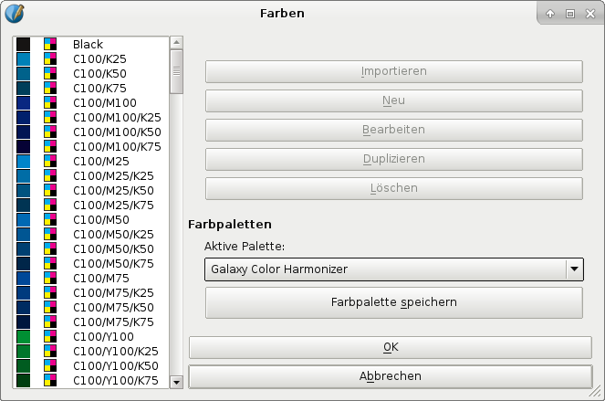

Anstatt des Scribus-eigenen Farbrads kann man auch den Galaxy-Color-Harmonizer benutzen, um Farbharmonien zu erstellen. Der größte Unterschied ist das Farbmodell: RGB (Scribus) und CMYK (Galaxy).
Der Color-Harmonizer funktioniert (noch) nicht in Software, ist aber trotzdem leicht zu nutzen. Als erstes muß man die Standard-Farbpalette zu »Galaxy Color Harmonizer« ändern oder die Palette in ein Dokument importieren:
|  |
Das Farbrad unten reicht aus, um Farbharmonien zu erstellen, aber falls man eine bessere Qualität braucht, kann man von der Galaxy-Gauge-Homepage entweder ein hochauflösendes Bild des Farbrads herunterladen oder die gedruckte Galaxy-Color-Map-Pro-Referenz bestellen, die das Farbrad enthält.
|
Es gibt mehrere Wege, attraktive Farbkombinationen zu finden.
| Zwei Farben innerhalb von zwei oder drei Sektoren. Die Farben müssen genug Kontrast haben. Beispiel: C100, C100/M50 |
Eine Kombination aus vier Farben. Man beginnt bei einer beliebigen Farbe und nimmt jede sechste Farbe dazu. Beispiel: M100/Y100, C50/Y100, C100, C50/M100 |
|
 |
||
Zwei gegenüberliegende Farben des Farbrads. Dies sind entgegengesetzte Farbtöne. Beispiel: M100, C100/Y100 |
Unter Berücksichtigung der vorherigen Methoden im Farbrad nach innen gehen und die Farben durch Hinzugabe von Schwarz (K) dunkler machen. Beispiel: C100/Y100/K25, M100/K25 |
|
 |
||
Verwandte Farbtöne, die sechs Felder im oder gegen den Uhrzeigersinn nebeneinander liegen. Beispiel: C50/M100, C100 |
Unter Berücksichtigung der vorherigen Methoden im Farbrad nach innen gehen, um die Farben heller zu machen. Beispiel: C50, C50/Y25 |
|
 |
 |
|
Eine Kombination aus drei Farben. Man beginnt bei einer beliebigen Farbe und nimmt jede achte Farbe dazu. Beispiel: C50/M100, M50/Y100, C100/Y50 |
Bei allen Methoden kann man eine Farbe als Hauptfarbe setzen und die andere(n) als Nebenfarbe oder Töne. |
|
 |
 |
Bitte beachten: Druck ist nicht immer perfekt. Die Werte im Color-Harmonizer gehen von idealen Voraussetzungen aus, manchmal ergeben leichte Änderungen aber ein besseres Ergebnis.
© 2013 Scientific Illustration Services Corp.